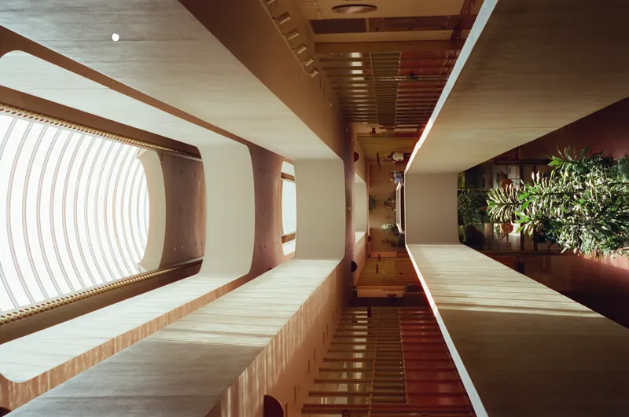
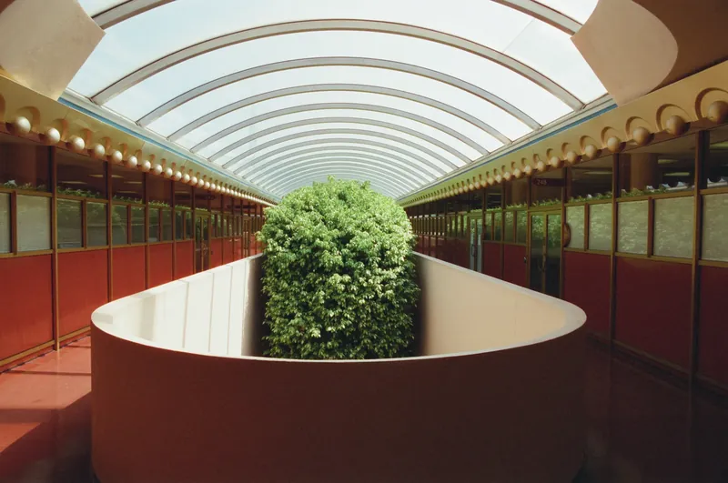
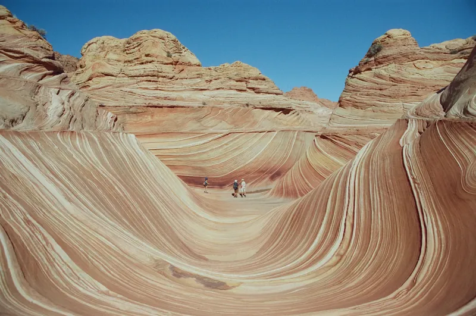

05
Roll 961Two Curves · 两条弧
A
B
C
D
E
F
这一卷只有两个题目，都是弧。
前一半在马林县市政中心。赖特最后一件在美国建成的作品，1962 年落成时他已经走了三年。走廊是一条不断弯过去的拱，天窗把光切成规律的带子，落在地上，又被柱子打断。
后一半在亚利桑那北部的红岩。砂岩一层一层压出来，走近了看是等高线，退远了看是浪。石头把几千万年折叠成一道弧，我们花两小时走完它。


走近了是等高线，退远了是浪。卷 961





本卷共 36 帧版面选用 11 张，整卷见上方联系表。全画幅 24×36，马林县 · 亚利桑那。